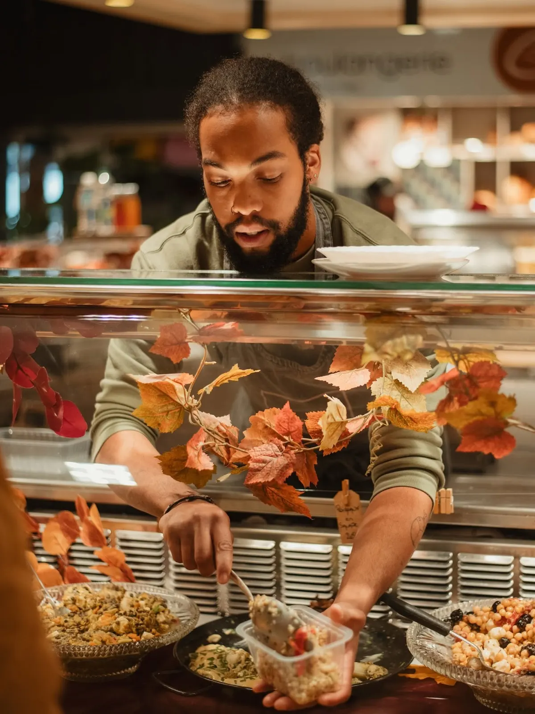
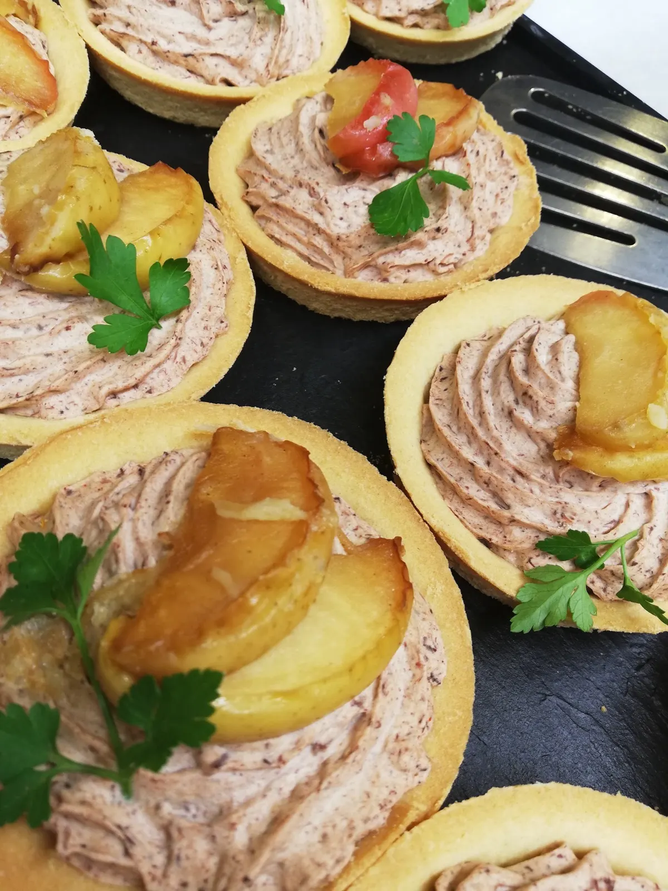
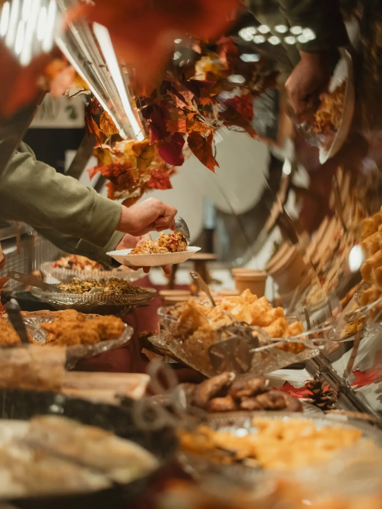
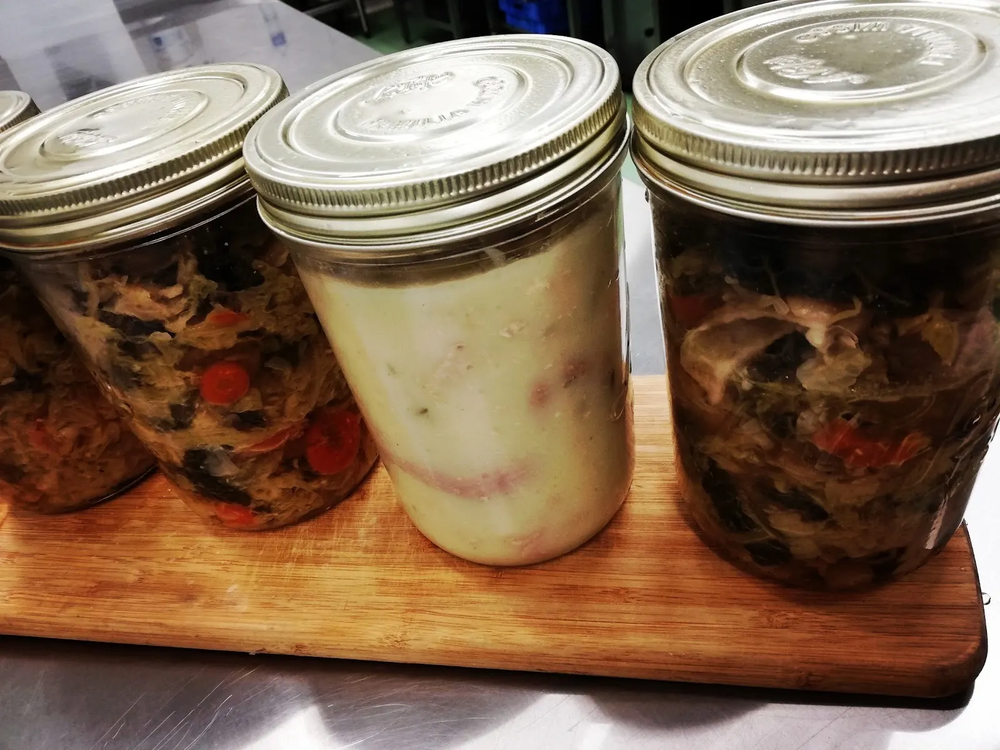
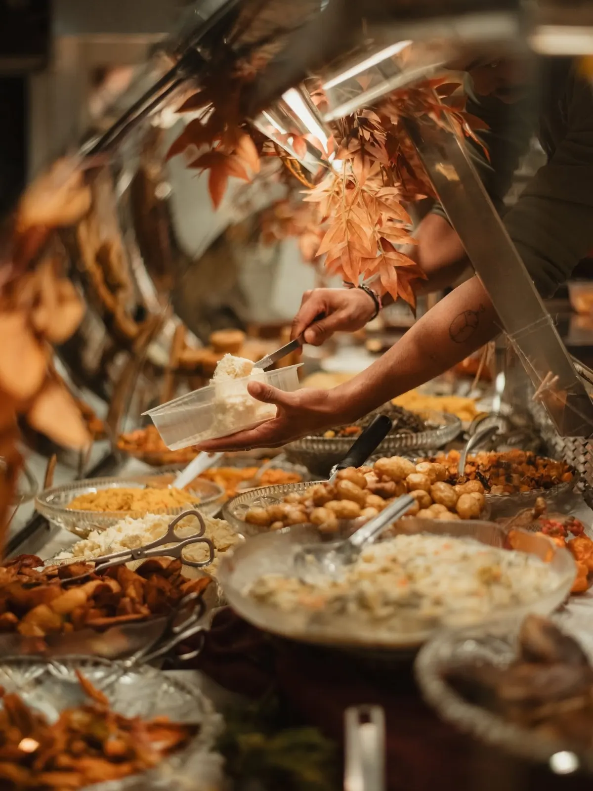
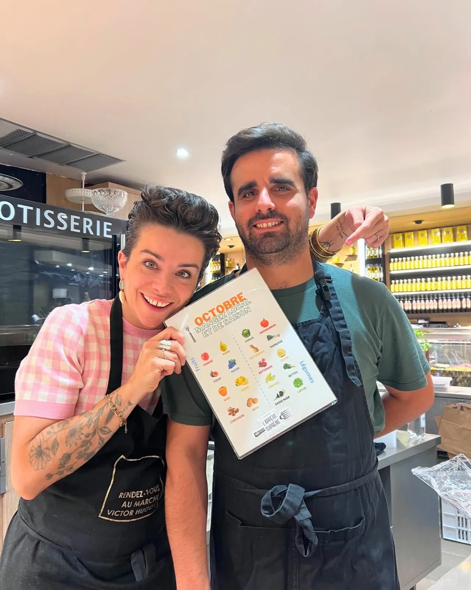
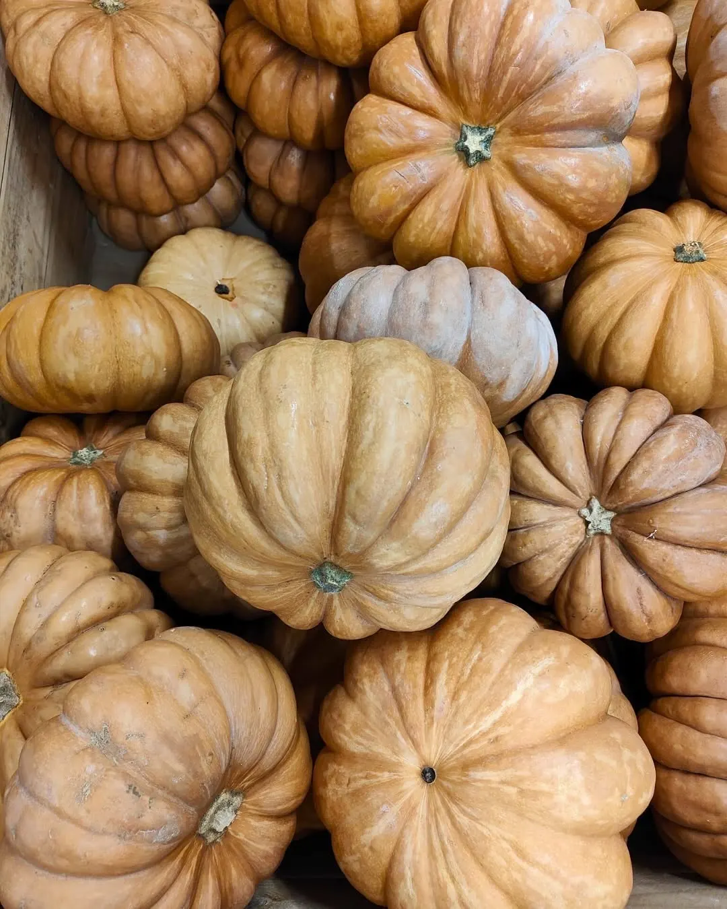
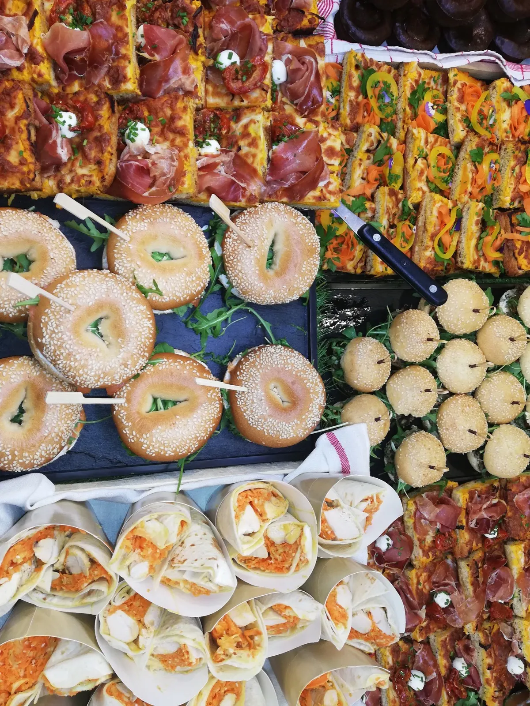
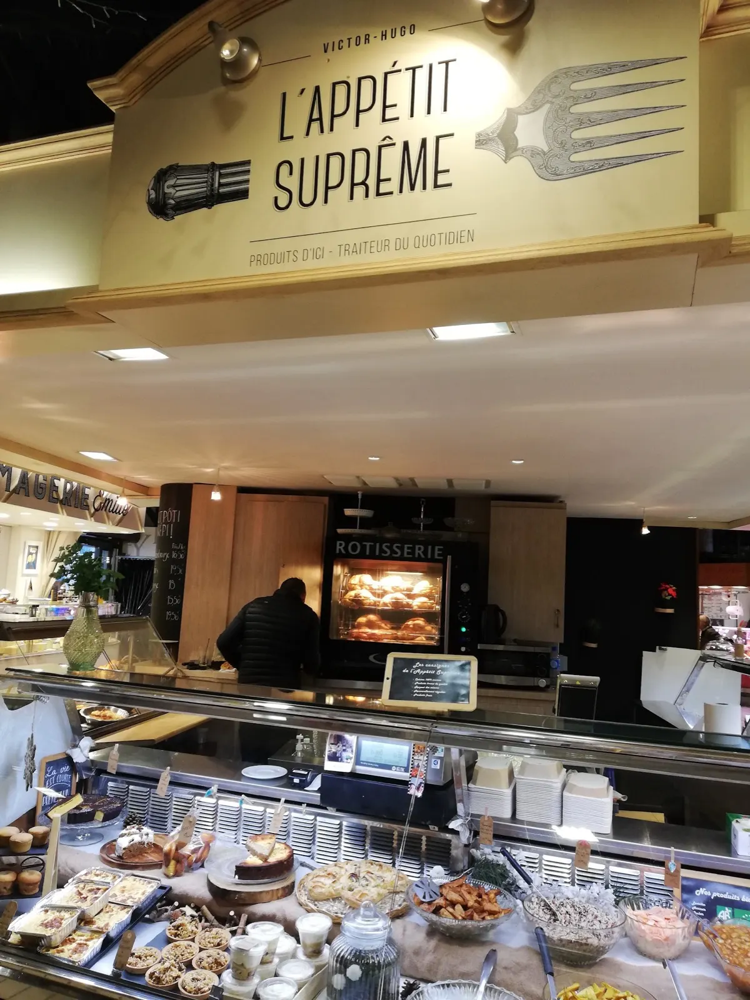

Du fait maison, du frais, de la saison.


Entreprise familiale installée au marché Victor Hugo, à Toulouse. Une cuisine maison et de saison, avec des produits frais et régionaux : le traiteur du quotidien, et des assiettes qui font toujours plaisir.
- Marché Victor HugoLoges 184 à 186, Toulouse
- Tous les joursde 8 h à 13 h 30
- 4,8 sur 5 sur Google37 avis
- Entreprise familialeProduits frais et régionaux


Ce qui vous attend derrière la vitrine
Des plats maison, servis à la barquette au comptoir du stand, et tout ce qu'il faut pour une tablée.
Les plats chauds maison
Cuisinés avec les produits de saison, servis au comptoir.
Les bocaux
Légumes, blanquette : la cuisine maison à garder sous la main.
Tartelettes et bouchées
Garnies d'une mousse fine, relevées de persil frais.
Les plateaux de buffet
Bagels, tartines et bouchées pour vos tablées.
Purée maison, saucisse bien cuite, zéro chichi. Quand c'est bien fait, y'a rien à ajouter.L'appétit suprême, sur le plat qui leur rappelle l'enfance
Le plat qu'on a tous mangé petit, à la cantine ou le mercredi midi.
On en mange encore aujourd'hui. Et franchement ? Ça marche toujours.
Une famille au marché, une cuisine qui suit la saison
Au marché Victor Hugo, les étals donnent le rythme. Produits frais et régionaux, tout est cuisiné maison, et la vitrine change avec les saisons.



Pour vos tablées
Bagels, tartines, bouchées : le traiteur prépare aussi des plateaux à partager pour un buffet.
Pour en parler, passez au stand, appelez ou écrivez à l'équipe.

Plateaux de buffetAu marché Victor Hugo
Le stand est au marché couvert, loges 184 à 186 et 213 à 214A. Ouvert tous les matins, du lundi au dimanche.

Tous les jours
8 h à 13 h 30
Du lundi au dimanche.
Marché Victor Hugo
Loges 184 à 186 et 213 à 214A
31000 Toulouse